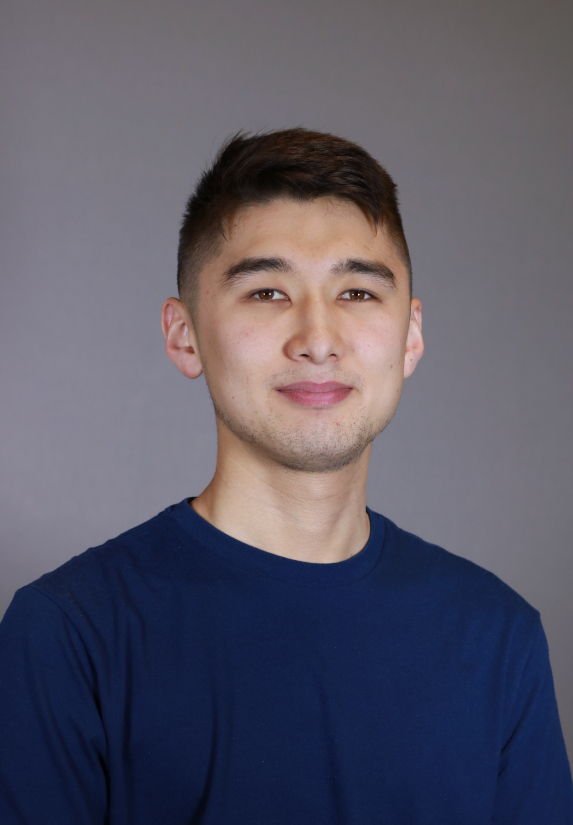

Hi, everyone! My name is Bakhbyergyen (aka "Bakh"), and I am a second year Computer Science Master's student at the University of Kansas. I obtained my bachelor's degree in Aerospace Engineering in 2021, also from KU.
I grew up playing chess and competing in regional math olympiads. As a kid, I would always wonder why many of the trivial house chores are still being done by humans and not just be automated. Often times, typical reaction would be, "You shouldn't be lazy." This enabled me better appreciate science and technology from a young age.
I can fully communicate in four different languages: English, Mongolian, Kazakh and Turkish.
In my free time, I enjoy playing and watching soccer. Like many, my idol is Cristiano Ronaldo, on and off the pitch. Reading is my other hobby. Authors like Dan Brown and Haruki Murakami are gems that the world is blessed with.
Download my full resume here.
I was able to successfully map my RC car's surrounding and localize itself on the map using SLAM Toolbox. On the generated map, global raceline trajectory algorithm was implemented so that the car could navigate through the globally set path using pure_pursuit control.
My next steps include figuring out the local planner and control. MPC ...
yerjanb AT ku DOT edu